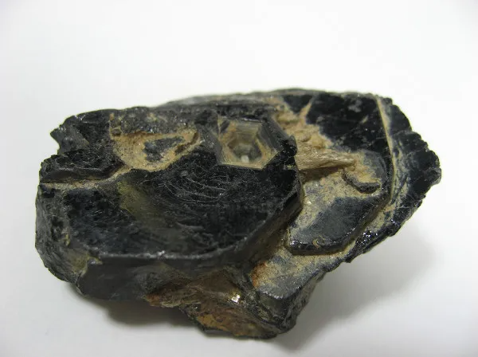

Tântalo: o metal por trás da tecnologia
Conheça suas propriedades, descoberta, utilizações, importância e cuidados relacionados a esse elemento químico.
O que é o Tântalo?
O tântalo (Ta) é um elemento químico metálico, encontrado em estado sólido e com aparência brilhante, cinza-prateada e com uma tonalidade azulada.
Ele se destaca por ser muito dúctil, possuir um ponto de fusão muito elevado, de aproximadamente 3.017 °C, e apresentar alta resistência à corrosão.
O tântalo também é praticamente imune a ácidos abaixo de 150 °C, o que contribui para sua resistência e permite sua utilização em diferentes áreas.
Onde é encontrado?
O tântalo é encontrado principalmente em rochas pegmatíticas, associado a rochas graníticas e alcalinas. Ele também pode ser encontrado em minerais como tantalita, coltan (columbita-tantalita) e microlita.

Descoberta do Tântalo
O tântalo foi descoberto em 1802, no início do século XIX, pelo cientista Anders Gustaf Ekeberg, que identificou um novo óxido metálico em minerais encontrados na Suécia e na Finlândia. O elemento não reagia com ácidos, o que levou ao nome Tântalo (em referência ao mito grego do rei que não conseguia beber a água à sua volta). Mais tarde, os cientistas Heinrich Rose e Jean-Charles Marignac confirmaram que o tântalo era um elemento diferente do nióbio.
Utilizações do Tântalo
Eletrônicos
Utilizado na produção de capacitores de alta capacitância para smartphones e notebooks devido ao alto desempenho em tamanho reduzido.
Equipamentos médicos
Empregado em próteses e implantes cirúrgicos por ser biocompatível e inerte aos fluidos corporais.
Transportes
É utilizado na produção de superligas para turbinas de aeronaves, devido à sua resistência a temperaturas extremas e à corrosão.
Importância do Tântalo
Importância biológica
O tântalo não possui uma função biológica essencial. Porém, destaca-se por sua alta biocompatibilidade e ausência de toxicidade, não sofrendo corrosão nem reagindo com fluidos corporais quando implantado no corpo humano.
Impactos ambientais
A mineração do tântalo pode causar degradação do solo e contaminação de rios quando não é realizada com um gerenciamento adequado. Além disso, o descarte incorreto de aparelhos eletrônicos pode contribuir para o aumento do lixo eletrônico.
Importância econômica
O tântalo é considerado um mineral estratégico e valioso, principalmente por sua utilização na fabricação de componentes eletrônicos, equipamentos médicos e peças para aeronaves. O Brasil possui uma das maiores reservas de tântalo do mundo, tornando esse recurso importante para a economia e para a indústria.
Segurança
Cuidados com o Tântalo
O tântalo metálico é considerado atóxico e apresenta boa biocompatibilidade. Porém, a exposição ao pó do metal pode causar irritação nos olhos, pele e vias respiratórias.
Durante o manuseio, é recomendado utilizar máscara respiratória, proteção para os olhos e manter o ambiente com ventilação adequada. A exposição pode ocorrer por inalação, ingestão ou absorção pela pele. Por isso, é importante utilizar equipamentos de proteção e manter o ambiente adequadamente ventilado.